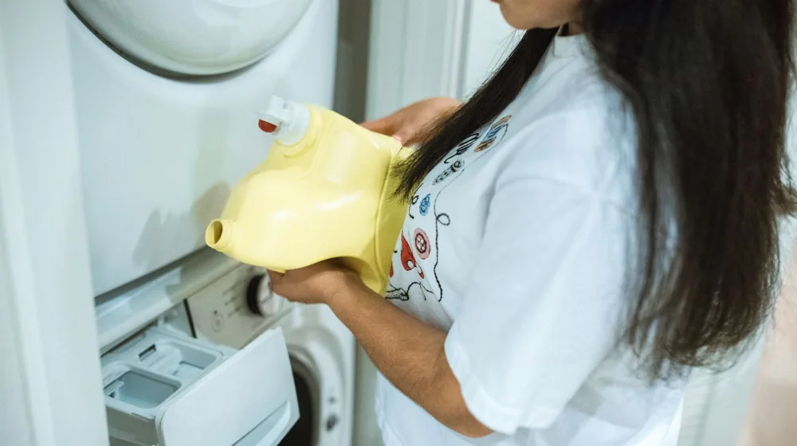

친환경 세제 고르는 법, '진짜'와 '가짜' 구별하는 3가지 기준
사진: Vika Glitter / Pexels (무료 이미지, 출처 표기)
친환경 세제라는 이름만 믿고 구매했다가 세척력이 너무 떨어지거나, 알고 보니 무늬만 친환경인 '그린워싱(위장 환경주의)' 제품이어서 실망한 적 있으신가요? 시중의 수많은 제품 중 환경과 피부에 모두 안전한 진짜 제품을 고르려면 명확한 기준을 알아야 합니다. 환경부 인증 마크부터 유해 성분 구별법까지, 실생활에서 바로 쓸 수 있는 구체적인 가이드를 정리해 드립니다.
국가가 보증하는 친환경 인증 마크 확인하기

제품 패키지에 '자연 추출', '에코' 같은 문구가 적혀 있어도 공식 기관의 인증 마크가 없다면 신뢰하기 어렵습니다. 가장 먼저 확인해야 할 것은 공신력 있는 기관의 인증 마크입니다. 한국환경산업기술원에 따르면 '환경표지' 마크는 생산부터 폐기까지 전 과정에서 오염물질 배출을 줄인 제품에만 부여됩니다. 해외 인증의 경우 프랑스의 '에코서트(Ecocert)'나 미국의 'USDA 유기농' 마크가 대표적입니다.
성분표에서 이것만큼은 피하세요: 유해 물질 체크리스트
전성분 표시가 된 세제류를 고를 때는 뒷면의 상세 성분표를 눈여겨보아야 합니다. 특히 피부 자극을 유발하거나 수질 오염을 일으키는 대표적인 성분들은 반드시 피하는 것이 좋습니다.
- 가습기 살균제 성분(CMIT/MIT): 호흡기 및 피부 점막에 강한 자극을 줍니다. 국내 제조 세정제류에는 엄격히 제한되나, 직구 제품이나 유통 경로에 따라 포함될 수 있어 확인이 필요합니다.
- 합성 계면활성제(LAS, AS 등): 석유계 원료로 만들어져 생분해(자연 분해)가 잘 되지 않고 수생태계에 악영향을 미칩니다. 대신 코코넛, 야자 등 식물 유래 계면활성제가 사용되었는지 확인해야 합니다.
- 인공 향료 및 색소: 세탁 후 좋은 향을 내기 위해 넣는 인공 향료는 알레르기나 피부염을 유발하는 주요 원인 중 하나입니다. 무향 제품이나 천연 에센셜 오일로 향을 낸 제품이 더 안전합니다.
친환경 세제의 핵심 지표, 생분해도를 점검하세요
세제가 물에 녹은 후 자연 상태에서 얼마나 빠르게 분해되는지를 나타내는 지표가 '생분해도'입니다. 생분해도가 높을수록 하천으로 흘러 들어갔을 때 수질 오염을 최소화합니다. 한국 환경표지 인증 기준을 통과한 제품은 일반적으로 7일 이내에 90% 이상 분해되는 우수한 생분해성을 가지고 있습니다. 제품 설명서에 구체적인 생분해도 수치(예: 생분해도 99%)가 정확히 명시되어 있는지 확인하는 것도 좋은 방법입니다.
내용물은 물론 용기까지 진짜 친환경인지 따져보기
진정한 친환경 세제는 내용물뿐만 아니라 포장재까지 지속 가능해야 합니다. 최근 플라스틱 사용량을 줄이기 위해 재생 플라스틱(PCR, Post-Consumer Recycled)을 사용한 용기나 리필형 파우치 제품이 늘어나는 추세입니다. 더 나아가 플라스틱 쓰레기가 전혀 발생하지 않는 고체 비누 형태의 '설거지 바'나 종이 패키지에 담긴 '시트 세제'도 훌륭한 대안입니다. 분리배출이 쉬운 수분리성 라벨(물에 잘 녹아 분리되는 라벨)을 적용했는지도 체크해 보세요.
자주 묻는 질문(FAQ)
친환경 세제를 고르고 사용할 때 소비자들이 가장 자주 묻는 질문을 모았습니다.
Q: 친환경 세제는 세척력이 떨어지지 않나요?
A: 과거에는 친환경 세제의 세척력이 약하다는 인식이 있었지만, 최근에는 베이킹소다, 과탄산소다, 구연산 등 천연 세정 성분을 과학적으로 배합하여 일반 세제 못지않은 세척력을 내는 제품이 많습니다. 기름때나 찌든 때는 애벌빨래를 가볍게 병행하면 만족스러운 세정 효과를 볼 수 있습니다.
Q: '1종 세제'와 '2종 세제'는 어떻게 다른가요?
A: 보건복지부 고시에 따르면 1종 세제는 사람이 먹는 야채나 과일을 씻는 데 사용할 수 있는 세제입니다. 2종 세제는 식기 및 조리기구용입니다. 유아용 식기나 젖병을 닦을 때는 더욱 안전한 1종 세제를 선택하는 것이 좋습니다. 다만 각 국가별, 시점별 세부 기준이 다를 수 있으므로 구매 시점의 제품 표시사항을 다시 한번 확인하시기 바랍니다.
🔗 이 글도 함께 보면 좋아요: 여권 만료일 조회부터 온라인 재발급 신청까지 5분 해결법
관련 추천 상품
이 포스팅은 쿠팡 파트너스 활동의 일환으로, 이에 따른 일정액의 수수료를 제공받습니다.
자주 묻는 질문(FAQ) (탭하면 펼쳐져요)
Q1. 친환경 세제는 세척력이 떨어지지 않나요?
A. 과거와 달리 최근 친환경 세제는 베이킹소다, 과탄산소다 등 천연 세정 성분을 과학적으로 배합하여 일반 세제 못지않은 세척력을 냅니다. 찌든 때는 애벌빨래를 병행하면 더욱 깨끗하게 세탁할 수 있습니다.
Q2. 1종 세제와 2종 세제는 어떻게 다른가요?
A. 1종 세제는 사람이 먹는 야채나 과일을 씻는 데도 사용할 수 있는 세제이며, 2종 세제는 일반 식기 및 조리기구용입니다. 아이 젖병이나 유아식기를 닦을 때는 1종 세제를 선택하는 것이 안전합니다.